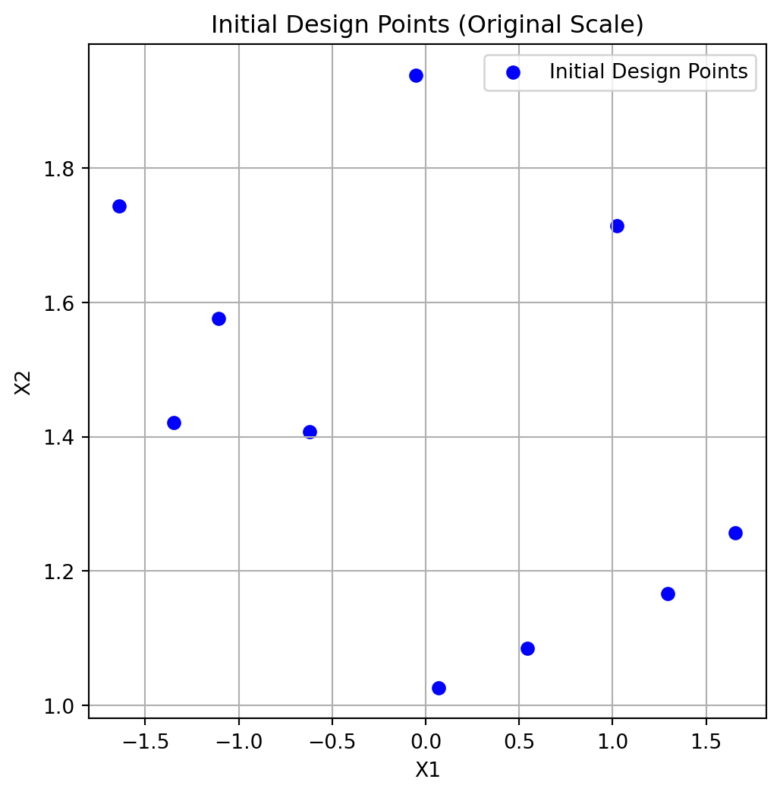
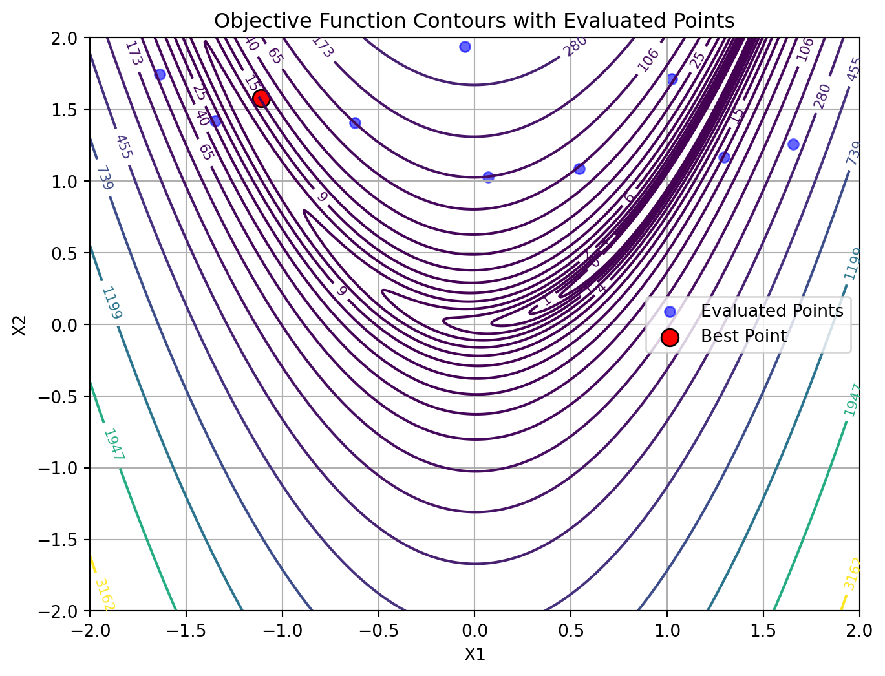

import numpy as np
from spotoptim import SpotOptim
from spotoptim.function import rosenbrock
import warnings
warnings.filterwarnings('ignore')11 SpotOptim Step-by-Step Optimization Process
12 Introduction
This document provides a comprehensive step-by-step explanation of the optimization process in the SpotOptim class. We’ll use the 2-dimensional Rosenbrock function as our example and cover all methods involved in each stage of optimization.
Topics Covered:
- Standard optimization workflow
- Handling noisy functions with repeats
- Handling function evaluation failures (NaN/inf values)
13 Setup and Test Functions
Let’s start by defining our test functions, including variants with noise and occasional failures. The two-dimensional Rosenbrock function is defined as: \[ f(x, y) = (a - x)^2 + b(y - x^2)^2 \] where typically (a = 1) and (b = 100). The generalized form for n dimensions is: \[ f(X) = \sum_{i=1}^{N-1} \left[100 \cdot (x_{i+1} - x_i^2)^2 + (1 - x_i)^2\right] \] The documentation can be found here: DOC
Set random seed for reproducibility:
np.random.seed(42)Based on the standard Rosenbrock function, we define two variants:
- the noisy Rosenbrock function:
def rosenbrock_noisy(X, noise_std=0.1):
"""
Rosenbrock with Gaussian noise for testing noisy optimization.
"""
X = np.atleast_2d(X)
base_values = rosenbrock(X)
noise = np.random.normal(0, noise_std, size=base_values.shape)
return base_values + noiseand 2. the Rosenbrock function with occasional failures:
def rosenbrock_with_failures(X, failure_prob=0.15):
"""
Rosenbrock that occasionally returns NaN to simulate evaluation failures.
"""
X = np.atleast_2d(X)
values = rosenbrock(X)
# Randomly inject failures
for i in range(len(values)):
if np.random.random() < failure_prob:
values[i] = np.nan
return values14 Standard Optimization Workflow
Let’s trace through a complete optimization run to understand each step.
14.1 Phase: Initialization and Setup
When you create a SpotOptim instance, several initialization steps occur during the __init__() method, see DOC.
- Objective function (
fun) and bounds are stored. - Acquisition function (
acquisition) is stored (default isy). - Determine if noise handling is active (based on
repeats_initialandrepeats_surrogate) - For dimensions with tuple bounds (factor variables), internal integer mappings are created and bounds are replaced with (0, n_levels-1). This is handled by
_process_factor_bounds(). So, e.g.,[('red', 'green', 'blue')]is mapped to the integer interval[(0, 2)]internally. - The dimension of the problem (
n_dim) is inferred from the bounds. - If
var_typeis not provided, it defaults to all “float” (continuous) variables, except for factor variables which are set to “factor” via_process_factor_bounds(). - Default variable names (
var_name) are set if not provided. - Default variable transformations (
var_transform) are set if not provided. - Transformations are applied to bounds based on
var_transformsettings. Natural bounds are stored in_original_lowerand_original_upper. - Dimension reduction by identifying fixed dimensions (if any) is performed via
_setup_dimension_reduction(). - The surrogate is initialized (default: Gaussian Process with Matérn kernel) as follows:
kernel = ConstantKernel(
constant_value=1.0, constant_value_bounds=(1e-3, 1e3)
) * Matern(length_scale=1.0, length_scale_bounds=(1e-2, 1e2), nu=2.5)
self.surrogate = GaussianProcessRegressor(
kernel=kernel,
n_restarts_optimizer=10,
normalize_y=True,
random_state=self.seed,
)- The Design generator is initialized (default: Latin Hypercube Sampling).
- The storage for results ins initialized. This includes the following attributes:
X_: Evaluated design pointsy_: Corresponding function valuesy_mo: For multi-objective functions, stores all objectivesbest_x_: Best point found so farbest_y_: Best function value found so farn_iter_: Number of iterations completedmean_X,mean_y,var_y: For noisy functions, mean and variance trackingmin_mean_X: Best mean point for noisy functionsmin_mean_y: Best mean value for noisy functionsmin_var_y: Variance at best mean pointmin_X: Best point found (deterministic)min_y: Best function value found (deterministic)counter: Total number of function evaluationssuccess_rate: Ratio of successful evaluationssuccess_counter: Count of successful evaluationswindow_size: For moving average of success ratesuccess_history: History of success/failure for evaluations
# Create optimizer
opt = SpotOptim(
fun=rosenbrock,
bounds=[(-2, 2), (1, 2)],
n_initial=10,
max_iter=30,
verbose=True,
seed=42,
var_trans=["id", "log"]
)TensorBoard logging disabled14.2 Phase: Initial Design Generation
14.2.1 Method: get_initial_design()
This method generates or processes the initial sample points. It is manually called here for demonstration (normally done inside optimize()).
What happens in get_initial_design():
- If
X0=None: Generate space-filling design using Latin Hypercube Sampling (LHS) - If
x0(starting point) provided: Include it as first point and transform user’s points to internal scale - Apply dimension reduction if configured
- Round integer/factor variables
X0 = opt.get_initial_design(X0=None)
print(f"Generated {len(X0)} initial design points using Latin Hypercube Sampling")
print(f"Design shape: {X0.shape}")
print(f"\nFirst 3 points (internal scale):")
print(X0[:3])Generated 10 initial design points using Latin Hypercube Sampling
Design shape: (10, 2)
First 3 points (internal scale):
[[-1.10958242 0.45478229]
[ 1.65656083 0.228921 ]
[-1.63767094 0.55620747]]Note, because bounds were set to [(-2, 2), (-2, 2)] and n_initial=10, the generated points are within this range and the design has two-dimensional shape (10, 2).
- Print initial design in original scale and in internal scale:
X0_original = opt._inverse_transform_X(X0)
print(f"\nFirst 3 points (original scale):")
print(X0_original[:3])
print(f"\nFirst 3 points (internal scale):")
print(X0[:3])
First 3 points (original scale):
[[-1.10958242 1.57583027]
[ 1.65656083 1.25724272]
[-1.63767094 1.7440456 ]]
First 3 points (internal scale):
[[-1.10958242 0.45478229]
[ 1.65656083 0.228921 ]
[-1.63767094 0.55620747]]- Plot initial design in original scale:
import matplotlib.pyplot as plt
plt.figure(figsize=(6, 6))
plt.scatter(X0_original[:, 0], X0_original[:, 1], c='blue', label='Initial Design Points')
plt.xlabel("X1")
plt.ylabel("X2")
plt.title("Initial Design Points (Original Scale)")
plt.legend()
plt.grid(True)
plt.show()
14.3 Phase 3: Initial Design Curation
14.3.1 Method: _curate_initial_design()
This method ensures we have sufficient unique points and handles repeats.
What happens in _curate_initial_design():
- Remove duplicate points (can occur after rounding integers)
- Generate additional points if duplicates reduced count below
n_initial - Repeat each point
repeats_initialtimes if > 1 (for noisy functions)
X0_curated = opt._curate_initial_design(X0)
print(f"Curated design shape: {X0_curated.shape}")
print(f"Unique points: {len(np.unique(X0_curated, axis=0))}")
print(f"Total points (with repeats): {len(X0_curated)}")Curated design shape: (10, 2)
Unique points: 10
Total points (with repeats): 1014.4 Phase 4: Initial Design Evaluation
14.4.1 Method: _evaluate_function()
Evaluates the objective function at all initial design points. The points are converted back to the original scale for evaluation.
What happens in _evaluate_function():
- Convert points from internal to original scale
- Call objective function with batch of points
- Convert multi-objective to single-objective if needed
- Return array of function values
X0_original = opt._inverse_transform_X(X0_curated)
y0 = opt._evaluate_function(X0_curated)
print(f"Evaluated {len(y0)} points")
print(f"Function values shape: {y0.shape}")
print(f"First 5 points with function values:")
for i in range(min(5, len(y0))):
print(f" Point {i+1}: {X0_original[i]} → f(x)={y0[i]:.6f}")
print(f"\nBest initial value: {np.min(y0):.6f}")
print(f"Worst initial value: {np.max(y0):.6f}")
print(f"Mean initial value: {np.mean(y0):.6f}")Evaluated 10 points
Function values shape: (10,)
First 5 points with function values:
Point 1: [-1.10958242 1.57583027] → f(x)=16.329192
Point 2: [1.65656083 1.25724272] → f(x)=221.533421
Point 3: [-1.63767094 1.7440456 ] → f(x)=94.926795
Point 4: [1.29554412 1.1658592 ] → f(x)=26.360696
Point 5: [-0.05124545 1.93852778] → f(x)=375.876648
Best initial value: 16.329192
Worst initial value: 375.876648
Mean initial value: 107.57120814.5 Phase 5: Handling Failed Evaluations
14.5.1 Method: _handle_NA_initial_design(X0,y0)
Removes points that returned NaN or inf values. In contrasts to later phases, no penalties are applied here; invalid points of the initial design are simply removed.
What happens in _handle_NA_initial_design():
- Identify NaN/inf values in function evaluations
- Remove corresponding design points
- Return cleaned arrays and original count
- Note: No penalties applied in initial design - invalid points simply removed
n_before = len(y0)
X0_clean, y0_clean, n_evaluated = opt._handle_NA_initial_design(X0_curated, y0)
print(f"Points before filtering: {n_before}")
print(f"Points after filtering: {len(y0_clean)}")
print(f"Removed: {n_before - len(y0_clean)} NaN/inf values")
print(f"\nAll remaining values finite: {np.all(np.isfinite(y0_clean))}")Points before filtering: 10
Points after filtering: 10
Removed: 0 NaN/inf values
All remaining values finite: True14.6 Phase 6: Validation Check
14.6.1 Method: _check_size_initial_design(y0, n_evaluated)
Ensures we have enough valid points to continue. The minimum required is the smaller of:
- typical minimum for surrogate fitting (3 for multi-dimensional, 2 for 1D), or
- what the user requested (n_initial).
What happens in _check_size_initial_design():
- Check if at least 1 valid point exists
- Raise error if all initial evaluations failed
- Print warnings if many points were invalid
try:
opt._check_size_initial_design(y0_clean, n_evaluated)
print(f"✓ Validation passed: {len(y0_clean)} valid points available")
print(f" Minimum required: 1 point")
print(f" Original evaluated: {n_evaluated} points")
except ValueError as e:
print(f"✗ Validation failed: {e}")✓ Validation passed: 10 valid points available
Minimum required: 1 point
Original evaluated: 10 points14.7 Phase 7: Storage Initialization
14.7.1 Method: _init_storage()
Store evaluated points and initialize tracking variables.
What happens during storage initialization:
_init_storage(): Initialize statistics tracking variables.
- Initialize storage (as done in
optimize())
# Initialize storage and statistics using the new _init_storage() method
opt._init_storage(X0_clean, y0_clean)
print(f"X_ (evaluated points): shape {opt.X_.shape}")
print(f"y_ (function values): shape {opt.y_.shape}")
print(f"n_iter_ (iterations): {opt.n_iter_}")X_ (evaluated points): shape (10, 2)
y_ (function values): shape (10,)
n_iter_ (iterations): 014.8 Phase: Statistics Update
14.8.1 Method: update_stats()
Update statistics like means and variances for noisy evaluations.
*** What happens in update_stats():***
- If
noiseis set (i.e.,repeats_initial> 1):- Compute mean and variance of function values for each unique point
- Store in
mean_X,mean_y, andvar_y
print(f"\nStatistics updated:")
if opt.noise:
print(f" - mean_X: {opt.mean_X.shape}")
print(f" - mean_y: {opt.mean_y.shape}")
print(f" - var_y: {opt.var_y.shape}")
else:
print(f" - No noise tracking (repeats=1)")
Statistics updated:
- No noise tracking (repeats=1)14.9 Phase: Log initial Design to TensorBoard
14.9.1 Method: _log_initial_design_tensorboard()
This method logs the initial design points and their evaluations to TensorBoard for visualization.
14.10 Phase: Initial Best Point
14.10.1 Method: _get_best_xy_initial_design()
Identify and report the best point from initial design.
What happens in _get_best_xy_initial_design():
- Find minimum value in
y_(ormean_yif noise) - Store as
best_y_ - Store corresponding point as
best_x_ - Print progress if verbose
opt._get_best_xy_initial_design()
print(f"Best point found: {opt.best_x_}")
print(f"Best value found: {opt.best_y_:.6f}")
print(f"\nOptimum location: [1, 1]")
print(f"Optimum value: 0")
print(f"Current gap: {opt.best_y_ - 0:.6f}")Initial best: f(x) = 16.329192
Best point found: [-1.10958242 1.57583027]
Best value found: 16.329192
Optimum location: [1, 1]
Optimum value: 0
Current gap: 16.32919214.11 Illustration of the Initial Design Phase Results
To visualize the results, we generate a contour plot with contour lines of the objective function and mark the best point. The other evaluated points are shown as well:
# Create a grid of points for contour plotting
x = np.linspace(-2, 2, 400)
y = np.linspace(-2, 2, 400)
X, Y = np.meshgrid(x, y)
grid_points = np.column_stack([X.ravel(), Y.ravel()])
Z = rosenbrock(grid_points).reshape(X.shape)
plt.figure(figsize=(8, 6))
# Contour plot
contour = plt.contour(X, Y, Z, levels=np.logspace(-0.5, 3.5, 20), cmap='viridis')
plt.clabel(contour, inline=True, fontsize=8)
# Plot evaluated points from the initial design phase:
plt.scatter(opt.X_[:, 0], opt.X_[:, 1], c='blue', label='Evaluated Points', alpha=0.6)
# Mark best point
plt.scatter(opt.best_x_[0], opt.best_x_[1], c='red', s=100, label='Best Point', edgecolors='black')
plt.xlabel('X1')
plt.ylabel('X2')
plt.title('Objective Function Contours with Evaluated Points')
plt.legend()
plt.grid(True)
plt.show()
15 Sequential Optimization Loop
After initialization, the main optimization loop begins. Each iteration follows these steps:
15.1 Step: Surrogate Model Fitting
15.1.1 Method: _fit_scheduler()
Fit surrogate model using appropriate data based on noise handling.
*** What happens in _fit_scheduler():***
First, the method transforms the input data X to the internal scale used by the optimizer. Then, it decides which data to use for fitting the surrogate model based on whether noise handling is enabled:
- If
noiseis set (i.e.,repeats_surrogate> 1):- Fit surrogate using mean points (
mean_X,mean_y)
- Fit surrogate using mean points (
- Else:
- Fit surrogate using all evaluated points (
X_,y_)
- Fit surrogate using all evaluated points (
_fit_scheduler() then calls _fit_surrogate() with the selected data.
15.1.2 Method: _fit_surrogate()
Fit a surrogate model (Gaussian Process) to current data.
What happens in _fit_surrogate():
- If
max_surrogate_pointsset and exceeded: Select subset of points using the_selection_dispatcher()method. - Fit surrogate model using
surrogate.fit(X, y) - Surrogate learns the function landscape and uncertainty
X_for_surrogate = opt._transform_X(opt.X_)
opt._fit_surrogate(X_for_surrogate, opt.y_)
print(f"Surrogate fitted with {len(opt.y_)} points")
print(f"Surrogate type: {type(opt.surrogate).__name__}")
print(f"Kernel: {opt.surrogate.kernel_}")Surrogate fitted with 10 points
Surrogate type: GaussianProcessRegressor
Kernel: 1.06**2 * Matern(length_scale=0.355, nu=2.5)15.1.3 Method: _selection_dispatcher()
What happens in _selection_dispatcher():
- If
max_surrogate_pointsis set and exceeded:- Select a subset of points from
X_andy_for fitting the surrogate model. - Strategies may include random sampling, clustering, or other heuristics to reduce the dataset size while preserving important information.
- Select a subset of points from
Surrogate Model Selection:
Default: Gaussian Process with Matérn kernel
Provides: Mean prediction \(\mu(x)\) and uncertainty \(\sigma(x)\)
Can be replaced with Random Forest, Kriging, etc.
The fitted surrogate can be plotted with the following code:
opt.plot_surrogate()
15.1.4 Step: Apply OCBA
15.1.5 Method: _apply_ocba()
What happens in _apply_ocba():
- Compute the optimality criteria for each point in the design space.
- Select the most promising points based on the criteria.
- Update the surrogate model with the selected points.
X_ocba = opt._apply_ocba()
if X_ocba is not None:
print(f"OCBA selected {X_ocba.shape[0]} points for re-evaluation")
print(f"OCBA points shape: {X_ocba.shape}")
else:
print("OCBA not applied (noise=False or ocba_delta=0)")OCBA not applied (noise=False or ocba_delta=0)15.2 Step: Predict with Uncertainty
15.2.1 Method: _predict_with_uncertainty()
Make predictions at new locations with uncertainty estimates.
What happens in _predict_with_uncertainty():
- Call
surrogate.predict(X, return_std=True) - Returns mean μ(x) and standard deviation σ(x)
- Used by acquisition function to balance exploitation (low μ) and exploration (high σ)
Here we test prediction at a few points:
X_test = np.array([[0.5, 0.5], [1.0, 1.0], [-0.5, 0.5]])
mu, sigma = opt._predict_with_uncertainty(X_test)
print(f"Test points: {X_test.shape}")
print(f"\nPredictions (μ ± σ):")
for i, (x, m, s) in enumerate(zip(X_test, mu, sigma)):
print(f" x={x} → μ={m:.4f}, σ={s:.4f}")Test points: (3, 2)
Predictions (μ ± σ):
x=[0.5 0.5] → μ=135.9904, σ=96.1193
x=[1. 1.] → μ=97.6979, σ=104.5930
x=[-0.5 0.5] → μ=169.1890, σ=64.438915.3 Step: Next Point Suggestion
15.3.1 Method: _suggest_next_point()
Optimize acquisition function to find next evaluation point.
What happens in _suggest_next_point():
- Use
differential_evolutionto optimize acquisition function - Find point that maximizes EI (or minimizes predicted value for ‘y’)
- Apply rounding for integer/factor variables
- Check distance to existing points (avoid duplicates)
- If duplicate or too close: Use fallback strategy
- Return suggested point
x_next = opt._suggest_next_point()
print(f"Next point suggested: {x_next}")Next point suggested: [1.13866324 0.15750508]Predict at suggested point:
mu_next, sigma_next = opt._predict_with_uncertainty(x_next.reshape(1, -1))
print(f"\nPrediction at suggested point:")
print(f" μ(x_next) = {mu_next[0]:.4f}")
print(f" σ(x_next) = {sigma_next[0]:.4f}")
Prediction at suggested point:
μ(x_next) = 1.3255
σ(x_next) = 50.4602Fallback Strategies (if acquisition optimization fails):
'best': Re-evaluate current best point'mean': Select point with best predicted mean'random': Random point in search space
15.4 Step: Acquisition Function Evaluation
15.4.1 Method: _acquisition_function()
Compute acquisition function value to guide search. The acquisition function is used as an objective function by the optimizer on the surrogate, e.g., differential evolution. It determines where to sample next.
# Evaluate acquisition at test points
print(f"Acquisition type: {opt.acquisition} (Expected Improvement)")
print(f"\nAcquisition values at test points:")
for x in X_test:
acq_val = opt._acquisition_function(x)
print(f" x={x} → acq={acq_val:.6f}")Acquisition type: y (Expected Improvement)
Acquisition values at test points:
x=[0.5 0.5] → acq=135.990446
x=[1. 1.] → acq=97.697886
x=[-0.5 0.5] → acq=169.189001Acquisition function can be used to balance:
- exploitation, i.e., low predicted mean \(\mu(x)\) and
- exploration, i.e., high uncertainty \(\sigma(x)\)
Acquisition Functions Available:
Expected Improvement (EI) - Default, best balance \[ \text{EI}(x) = (f^* - \mu(x))\Phi(Z) + \sigma(x)\phi(Z) \] where \(Z = \frac{f^* - \mu(x)}{\sigma(x)}\)
Probability of Improvement (PI) - More exploitative \[ \text{PI}(x) = \Phi\left(\frac{f^* - \mu(x)}{\sigma(x)}\right) \]
Mean (‘y’) - Pure exploitation \[ \text{acq}(x) = \mu(x) \]
15.5 Step: Update Repeats for Infill Points
15.5.1 Method: _update_repeats_infill_points()
Repeat the infill point for noisy function evaluation if repeats_surrogate > 1.
What happens in _update_repeats_infill_points():
- Takes the suggested next point (
x_next) - If
repeats_surrogate > 1: Creates multiple copies for repeated evaluation - Otherwise: Returns point as 2D array (shape: 1 × n_features)
- Returns array ready for function evaluation
x_next_repeated = opt._update_repeats_infill_points(x_next)
print(f"Shape before repeating: {x_next.shape}")
print(f"Shape after repeating: {x_next_repeated.shape}")
print(f"Number of evaluations planned: {x_next_repeated.shape[0]}")Shape before repeating: (2,)
Shape after repeating: (1, 2)
Number of evaluations planned: 115.6 Append OCBA Points to Infill Points
Combines OCBA selected points with the next suggested point for evaluation.
if X_ocba is not None:
x_next_repeated = np.append(X_ocba, x_next_repeated, axis=0)15.7 Step: Evaluation of New Points
15.7.1 Method: _evaluate_function() (again)
Evaluate the objective function at the suggested points.
x_next_2d = x_next.reshape(1, -1)
y_next = opt._evaluate_function(x_next_2d)
print(f"Evaluated point: {x_next}")
print(f"Function value: {y_next[0]:.6f}")
print(f"Current best: {opt.best_y_:.6f}")Evaluated point: [1.13866324 0.15750508]
Function value: 1.606003
Current best: 16.32919215.8 Step: Handle Failed Evaluations (Sequential)
15.8.1 Method: _handle_NA_new_points()
Handle NaN/inf values in new evaluations with penalty approach.
What happens in _handle_NA_new_points():
- Apply penalty to NaN/inf values (unlike initial design)
- Penalty = max(history) + 3×std(history) + random noise
- Remove remaining invalid values after penalty
- Return None if all evaluations failed → skip iteration
- Continue if any valid evaluations exist
x_clean, y_clean = opt._handle_NA_new_points(x_next_2d, y_next)
if x_clean is not None:
print(f"✓ Valid evaluations: {len(y_clean)}")
print(f" All values finite: {np.all(np.isfinite(y_clean))}")
else:
print(f"✗ All evaluations failed - iteration would be skipped")✓ Valid evaluations: 1
All values finite: TrueWhy penalties in sequential phase?
- Preserves optimization history
- Allows surrogate to learn “bad” regions
- Random noise prevents identical penalties
15.9 Step: Update Success Rate
15.9.1 Method: _update_success_rate(y0)
Update success rate BEFORE updating storage (initial design - all should be successes since starting from scratch)
What happens in _update_success_rate():
- Calculate success rate as ratio of valid evaluations to total evaluated
opt._update_success_rate(y0_clean)
print(f"\nSuccess rate updated: {opt.success_rate:.2%} (valid evaluations / total evaluations)")
Success rate updated: 0.00% (valid evaluations / total evaluations)15.10 Step: Update Storage
15.10.1 Internal updates
Add new evaluations to storage.
opt._update_storage(x_next_repeated, y_next)15.11 Update Statistics
Update statistics after new evaluations.
15.11.1 What happens in update_stats():
Always updated:
min_y: Best (minimum) function valuemin_X: Design point with best valuecounter: Total number of evaluations
For noisy functions only (if noise=True):
mean_X: Unique design pointsmean_y: Mean values per design pointvar_y: Variance per design point
opt.update_stats()
print(f"Basic statistics:")
print(f" min_y: {opt.min_y:.6f}")
print(f" min_X: {opt.min_X}")
print(f" counter: {opt.counter}")
if opt.noise:
print(f"\nNoise statistics:")
print(f" mean_X shape: {opt.mean_X.shape}")
print(f" mean_y shape: {opt.mean_y.shape}")
print(f" var_y shape: {opt.var_y.shape}")
else:
print(f"\nNoise handling: disabled (deterministic function)")Basic statistics:
min_y: 1.606003
min_X: [1.13866324 1.1705867 ]
counter: 11
Noise handling: disabled (deterministic function)15.12 Step: Update Best Solution
15.12.1 Method: _update_best_main_loop()
Update the best solution if improvement found.
best_before = opt.best_y_
opt._update_best_main_loop(x_clean, y_clean)
print(f"Best before: {best_before:.6f}")
print(f"Best after: {opt.best_y_:.6f}")
if opt.best_y_ < best_before:
print(f"\n✓ New best found!")
print(f" Location: {opt.best_x_}")
print(f" Value: {opt.best_y_:.6f}")
else:
print(f"\n○ Best unchanged")Iteration 0: New best f(x) = 1.606003
Best before: 16.329192
Best after: 1.606003
✓ New best found!
Location: [1.13866324 1.1705867 ]
Value: 1.606003Loop Termination Conditions:
The optimization continues until:
len(y_) >= max_iter(reached evaluation budget), ORelapsed_time >= max_time(reached time limit)
16 Complete Optimization Example
Now let’s run a complete optimization to see all steps in action:
# Create fresh optimizer
opt_complete = SpotOptim(
fun=rosenbrock,
bounds=[(-2, 2), (-2, 2)],
n_initial=8,
max_iter=25,
acquisition='ei',
verbose=False, # Set to False for cleaner output
seed=42
)
# Run optimization
result = opt_complete.optimize()
print(f"\nOptimization Result:")
print(f"{'='*70}")
print(f"Best point found: {result.x}")
print(f"Best value: {result.fun:.6f}")
print(f"True optimum: [1.0, 1.0]")
print(f"True minimum: 0.0")
print(f"Gap to optimum: {result.fun:.6f}")
print(f"\nFunction evaluations: {result.nfev}")
print(f"Sequential iterations: {result.nit}")
print(f"Success: {result.success}")
print(f"Message: {result.message}")
Optimization Result:
======================================================================
Best point found: [1.08776853 1.15560806]
Best value: 0.084058
True optimum: [1.0, 1.0]
True minimum: 0.0
Gap to optimum: 0.084058
Function evaluations: 25
Sequential iterations: 17
Success: True
Message: Optimization terminated: maximum evaluations (25) reached17 Noisy Functions with Repeats
When dealing with noisy objective functions, SpotOptim can evaluate each point multiple times and track statistics.
17.1 Configuration for Noisy Functions
NOISE_STD = 10.0
print("\n" + "="*70)
print("NOISY FUNCTION OPTIMIZATION")
print("="*70)
print(f"\nConfiguration for noisy optimization with noise std = {NOISE_STD}:")
# Wrapper to add noise
def rosenbrock_noisy_wrapper(X):
return rosenbrock_noisy(X, noise_std=NOISE_STD)
opt_noisy = SpotOptim(
fun=rosenbrock_noisy_wrapper,
bounds=[(-2, 2), (-2, 2)],
n_initial=6,
max_iter=20,
repeats_initial=3, # Evaluate each initial point 3 times
repeats_surrogate=2, # Evaluate each sequential point 2 times
verbose=False,
seed=42
)
print("Configuration for noisy optimization:")
print(f" repeats_initial: {opt_noisy.repeats_initial}")
print(f" repeats_surrogate: {opt_noisy.repeats_surrogate}")
print(f" noise: {opt_noisy.noise}")
======================================================================
NOISY FUNCTION OPTIMIZATION
======================================================================
Configuration for noisy optimization with noise std = 10.0:
Configuration for noisy optimization:
repeats_initial: 3
repeats_surrogate: 2
noise: True17.2 Noisy Optimization Workflow Differences
17.2.1 Modified Initial Design
With repeats_initial > 1:
result_noisy = opt_noisy.optimize()
print(f"\nInitial design with repeats:")
print(f" n_initial = {opt_noisy.n_initial}")
print(f" repeats_initial = {opt_noisy.repeats_initial}")
print(f" Total initial evaluations: {opt_noisy.n_initial * opt_noisy.repeats_initial}")
print(f"\nStatistics tracked:")
print(f" mean_X shape: {opt_noisy.mean_X.shape} (unique points)")
print(f" mean_y shape: {opt_noisy.mean_y.shape} (mean values)")
print(f" var_y shape: {opt_noisy.var_y.shape} (variances)")
print(f"\nExample statistics for first point:")
idx = 0
print(f" Point: {opt_noisy.mean_X[idx]}")
print(f" Mean value: {opt_noisy.mean_y[idx]:.4f}")
print(f" Variance: {opt_noisy.var_y[idx]:.4f}")
print(f" Std dev: {np.sqrt(opt_noisy.var_y[idx]):.4f}")
Initial design with repeats:
n_initial = 6
repeats_initial = 3
Total initial evaluations: 18
Statistics tracked:
mean_X shape: (7, 2) (unique points)
mean_y shape: (7,) (mean values)
var_y shape: (7,) (variances)
Example statistics for first point:
Point: [-1.90573195 -1.79824535]
Mean value: 2960.5138
Variance: 68.6148
Std dev: 8.2834Key Differences with Noise:
- Repeated Evaluations: Each point evaluated multiple times
- Statistics Tracking:
mean_X: Unique evaluation locationsmean_y: Mean function values at each locationvar_y: Variance of function valuesn_eval: Number of evaluations per location
- Surrogate Fitting: Uses
mean_yinstead ofy_ - Best Selection: Based on
mean_ynot individualy_
17.2.2 Update Statistics Method
print(f"After optimization:")
print(f" Total evaluations: {len(opt_noisy.y_)}")
print(f" Unique points: {len(opt_noisy.mean_X)}")
print(f" Average repeats per point: {len(opt_noisy.y_) / len(opt_noisy.mean_X):.2f}")
print(f"\nVariance statistics:")
print(f" Mean variance: {np.mean(opt_noisy.var_y):.6f}")
print(f" Max variance: {np.max(opt_noisy.var_y):.6f}")
print(f" Min variance: {np.min(opt_noisy.var_y):.6f}")After optimization:
Total evaluations: 20
Unique points: 7
Average repeats per point: 2.86
Variance statistics:
Mean variance: 43.630970
Max variance: 94.990756
Min variance: 6.35744918 Optimal Computing Budget Allocation (OCBA)
OCBA intelligently allocates additional evaluations to distinguish between competing solutions.
18.1 OCBA Configuration
print("\n" + "="*70)
print("OPTIMAL COMPUTING BUDGET ALLOCATION (OCBA)")
print("="*70)
opt_ocba = SpotOptim(
fun=rosenbrock_noisy_wrapper,
bounds=[(-2, 2), (-2, 2)],
n_initial=8,
max_iter=30,
repeats_initial=2,
repeats_surrogate=1,
ocba_delta=3, # Allocate 3 additional evaluations per iteration
verbose=False,
seed=42
)
print("OCBA Configuration:")
print(f" ocba_delta: {opt_ocba.ocba_delta}")
print(f" Purpose: Intelligently re-evaluate existing points")
print(f" Benefit: Better distinguish between similar solutions")
======================================================================
OPTIMAL COMPUTING BUDGET ALLOCATION (OCBA)
======================================================================
OCBA Configuration:
ocba_delta: 3
Purpose: Intelligently re-evaluate existing points
Benefit: Better distinguish between similar solutions18.2 OCBA Method
18.2.1 Method: _apply_ocba()
result_ocba = opt_ocba.optimize()
print(f"\nOCBA applied during optimization")
print(f" Final total evaluations: {result_ocba.nfev}")
print(f" Expected without OCBA: ~{opt_ocba.n_initial * opt_ocba.repeats_initial + result_ocba.nit * opt_ocba.repeats_surrogate}")
print(f" Additional OCBA evaluations: ~{result_ocba.nit * opt_ocba.ocba_delta}")
print(f"\nOCBA intelligently allocated extra evaluations to:")
print(f" - Current best candidate (confirm it's truly best)")
print(f" - Close competitors (distinguish between similar solutions)")
print(f" - High-variance points (reduce uncertainty)")
OCBA applied during optimization
Final total evaluations: 30
Expected without OCBA: ~27
Additional OCBA evaluations: ~33
OCBA intelligently allocated extra evaluations to:
- Current best candidate (confirm it's truly best)
- Close competitors (distinguish between similar solutions)
- High-variance points (reduce uncertainty)OCBA Algorithm:
- Identify best solution (lowest mean value)
- Calculate allocation ratios based on:
- Distance to best solution
- Variance of each solution
- Allocate
ocba_deltaadditional evaluations - Returns points to re-evaluate
- Requires: ≥3 points with variance > 0
OCBA Activation Conditions: - noise = True (repeats > 1) - ocba_delta > 0 - At least 3 design points exist - All points have variance > 0
19 Handling Function Evaluation Failures
SpotOptim robustly handles functions that occasionally fail (return NaN/inf).
19.1 Example with Failures
opt_failures = SpotOptim(
fun=rosenbrock_with_failures,
bounds=[(-2, 2), (-2, 2)],
n_initial=12,
max_iter=35,
verbose=False,
seed=42
)
result_failures = opt_failures.optimize()
print(f"\nOptimization with ~15% random failure rate:")
print(f" Function evaluations: {result_failures.nfev}")
print(f" Sequential iterations: {result_failures.nit}")
print(f" Success: {result_failures.success}")
# Count how many values are non-finite in raw evaluations
n_total = len(opt_failures.y_)
n_finite = np.sum(np.isfinite(opt_failures.y_))
print(f"\nEvaluation statistics:")
print(f" Total evaluations: {n_total}")
print(f" Finite values: {n_finite}")
print(f" Note: Failed evaluations handled transparently")
Optimization with ~15% random failure rate:
Function evaluations: 35
Sequential iterations: 27
Success: True
Evaluation statistics:
Total evaluations: 35
Finite values: 35
Note: Failed evaluations handled transparently19.2 Failure Handling in Initial Design
19.2.1 Method: _handle_NA_initial_design()
print("Initial design failure handling:")
print(" 1. Identify NaN/inf values")
print(" 2. Remove invalid points entirely")
print(" 3. Continue with valid points only")
print(" 4. No penalties applied")
print(" 5. Require at least 1 valid point")
print("\nRationale:")
print(" - Initial design should be clean")
print(" - Invalid regions identified naturally")
print(" - Surrogate trained on good data only")Initial design failure handling:
1. Identify NaN/inf values
2. Remove invalid points entirely
3. Continue with valid points only
4. No penalties applied
5. Require at least 1 valid point
Rationale:
- Initial design should be clean
- Invalid regions identified naturally
- Surrogate trained on good data only19.3 Failure Handling in Sequential Phase
19.3.1 Method: _handle_NA_new_points()
print("Sequential phase failure handling:")
print(" 1. Apply penalty to NaN/inf values")
print(" - Penalty = max(history) + 3×std(history)")
print(" - Add random noise to avoid duplicates")
print(" 2. Remove remaining invalid values")
print(" 3. Skip iteration if all evaluations failed")
print(" 4. Continue if any valid evaluations")
print("\nPenalty approach benefits:")
print(" ✓ Preserves optimization history")
print(" ✓ Surrogate learns to avoid bad regions")
print(" ✓ Better exploration-exploitation balance")
print(" ✓ More robust convergence")Sequential phase failure handling:
1. Apply penalty to NaN/inf values
- Penalty = max(history) + 3×std(history)
- Add random noise to avoid duplicates
2. Remove remaining invalid values
3. Skip iteration if all evaluations failed
4. Continue if any valid evaluations
Penalty approach benefits:
✓ Preserves optimization history
✓ Surrogate learns to avoid bad regions
✓ Better exploration-exploitation balance
✓ More robust convergence19.4 Penalty Application
19.4.1 Method: _apply_penalty_NA()
Let’s demonstrate penalty calculation:
# Simulate historical values
y_history_sim = np.array([10.0, 15.0, 8.0, 12.0, 20.0, 9.0])
y_new_sim = np.array([7.0, np.nan, 11.0, np.inf])
print("Historical values:", y_history_sim)
print("New evaluations:", y_new_sim)
# Apply penalty
y_repaired = opt_failures._apply_penalty_NA(
y_new_sim,
y_history=y_history_sim,
penalty_value=None, # Compute adaptively
sd=0.1
)
print(f"\nAfter penalty application:", y_repaired)
print(f"All finite: {np.all(np.isfinite(y_repaired))}")
# Show penalty calculation
max_hist = np.max(y_history_sim)
std_hist = np.std(y_history_sim, ddof=1)
penalty_base = max_hist + 3 * std_hist
print(f"\nPenalty calculation:")
print(f" max(history) = {max_hist:.2f}")
print(f" std(history) = {std_hist:.2f}")
print(f" Base penalty = {max_hist:.2f} + 3×{std_hist:.2f} = {penalty_base:.2f}")
print(f" Actual penalty = {penalty_base:.2f} + noise")Historical values: [10. 15. 8. 12. 20. 9.]
New evaluations: [ 7. nan 11. inf]
After penalty application: [ 7. 33.62137308 11. 33.5370057 ]
All finite: True
Penalty calculation:
max(history) = 20.00
std(history) = 4.50
Base penalty = 20.00 + 3×4.50 = 33.51
Actual penalty = 33.51 + noise20 Complete Method Summary
20.1 Methods Called During optimize()
20.1.1 Preparation Phase
get_initial_design()- Generate/process initial sample points_curate_initial_design()- Remove duplicates, handle repeats_evaluate_function()- Evaluate objective function_handle_NA_initial_design()- Remove NaN/inf from initial design_check_size_initial_design()- Validate sufficient points_init_storage()- Initialize storage (X_, y_, n_iter_)update_stats()- Compute mean/variance for noisy functions_init_tensorboard()- Log initial design to TensorBoard (if enabled)_get_best_xy_initial_design()- Identify initial best
20.1.2 Sequential Optimization Loop (each iteration)
_fit_scheduler()- Select data and fit surrogate based on noise handling- Internally calls
_transform_X()- Transform to internal scale - Internally calls
_fit_surrogate()- Fit Gaussian Process to data
- Internally calls
_apply_ocba()- OCBA allocation (if enabled)_suggest_next_point()- Optimize acquisition function- Internally calls
_acquisition_function() - Internally calls
_predict_with_uncertainty()
- Internally calls
_update_repeats_infill_points()- Repeat suggested point for noisy functions_evaluate_function()- Evaluate at suggested point(s)_handle_NA_new_points()- Handle failures with penalties- Internally calls
_apply_penalty_NA() - Internally calls
_remove_nan()
- Internally calls
_update_success_rate()- Update success tracking_update_storage()- Append new evaluations to storage- Internally calls
_inverse_transform_X()- Convert back to original scale
- Internally calls
update_stats()- Update mean/variance statistics_write_tensorboard_hparams()- Log hyperparameters (if enabled)_write_tensorboard_scalars()- Log scalar metrics (if enabled)_update_best_main_loop()- Update best solution
20.1.3 Finalization
to_all_dim()- Expand to full dimensions (if dimensionality reduction used)_determine_termination()- Determine termination reason_close_tensorboard_writer()- Close logging (if enabled)_map_to_factor_values()- Convert factors back to strings- Return
OptimizeResultobject
20.2 Helper Methods Used
_generate_initial_design()- LHS generation_repair_non_numeric()- Round integer/factor variables_select_new()- Check for duplicate points_handle_acquisition_failure()- Fallback strategiesto_red_dim()- Dimension reduction (if enabled)_selection_dispatcher()- Subset selection for large datasets
21 Termination Conditions
21.1 Method: _determine_termination()
print("\n" + "="*70)
print("TERMINATION CONDITIONS")
print("="*70)
print("\nMethod: _determine_termination()")
print("-" * 70)
print("Optimization terminates when:")
print(" 1. len(y_) >= max_iter (evaluation budget exhausted)")
print(" 2. elapsed_time >= max_time (time limit reached)")
print(" 3. Whichever comes first")
print(f"\nExample from previous run:")
print(f" Message: {result_failures.message}")
print(f" Evaluations: {result_failures.nfev}/{opt_failures.max_iter}")
print(f" Iterations: {result_failures.nit}")
======================================================================
TERMINATION CONDITIONS
======================================================================
Method: _determine_termination()
----------------------------------------------------------------------
Optimization terminates when:
1. len(y_) >= max_iter (evaluation budget exhausted)
2. elapsed_time >= max_time (time limit reached)
3. Whichever comes first
Example from previous run:
Message: Optimization terminated: maximum evaluations (35) reached
Evaluations: 35/35
Iterations: 2722 Performance Comparison on Noisy Functions
Let’s compare standard, noisy, and noisy+OCBA optimization:
print("\n" + "="*70)
print("PERFORMANCE COMPARISON")
print("="*70)
# Standard optimization
opt_std = SpotOptim(
fun=rosenbrock_noisy_wrapper,
bounds=[(-2, 2), (-2, 2)],
n_initial=8,
max_iter=50,
repeats_initial=1,
repeats_surrogate=1,
verbose=False,
seed=10
)
result_std = opt_std.optimize()
# With repeats (no OCBA)
opt_rep = SpotOptim(
fun=rosenbrock_noisy_wrapper,
bounds=[(-2, 2), (-2, 2)],
n_initial=8,
max_iter=50,
repeats_initial=2,
repeats_surrogate=1,
ocba_delta=0,
verbose=False,
seed=10
)
result_rep = opt_rep.optimize()
# With repeats + OCBA
opt_ocba_comp = SpotOptim(
fun=rosenbrock_noisy_wrapper,
bounds=[(-2, 2), (-2, 2)],
n_initial=8,
max_iter=50,
repeats_initial=1,
repeats_surrogate=1,
ocba_delta=1,
verbose=False,
seed=10
)
result_ocba_comp = opt_ocba_comp.optimize()
# Evaluate the found optima with the TRUE (noise-free) Rosenbrock function
# to get the actual quality of the solutions
print(f"\n" + "="*70)
print("TRUE FUNCTION VALUE EVALUATION")
print("="*70)
print("\nRe-evaluating found optima with noise-free Rosenbrock function:")
print("-" * 70)
# Evaluate each solution with the TRUE function (no noise)
true_val_std = rosenbrock(result_std.x.reshape(1, -1))[0]
true_val_rep = rosenbrock(result_rep.x.reshape(1, -1))[0]
true_val_ocba = rosenbrock(result_ocba_comp.x.reshape(1, -1))[0]
print(f"\nStandard (no repeats):")
print(f" Found x: {result_std.x}")
print(f" Noisy value (from optimization): {result_std.fun:.6f}")
print(f" TRUE value (noise-free): {true_val_std:.6f}")
print(f"\nWith repeats (no OCBA):")
print(f" Found x: {result_rep.x}")
print(f" Noisy value (from optimization): {result_rep.fun:.6f}")
print(f" TRUE value (noise-free): {true_val_rep:.6f}")
print(f"\nWith repeats + OCBA:")
print(f" Found x: {result_ocba_comp.x}")
print(f" Noisy value (from optimization): {result_ocba_comp.fun:.6f}")
print(f" TRUE value (noise-free): {true_val_ocba:.6f}")
print(f"\n" + "="*70)
print("PERFORMANCE COMPARISON SUMMARY")
print("="*70)
print(f"\nComparison on noisy Rosenbrock (σ={NOISE_STD}):")
print(f"{'Method':<30} {'Noisy Value':<15} {'TRUE Value':<15} {'Evaluations':<15}")
print(f"{'-'*75}")
print(f"{'Standard (no repeats)':<30} {result_std.fun:<15.6f} {true_val_std:<15.6f} {result_std.nfev:<15}")
print(f"{'With repeats (no OCBA)':<30} {result_rep.fun:<15.6f} {true_val_rep:<15.6f} {result_rep.nfev:<15}")
print(f"{'With repeats + OCBA':<30} {result_ocba_comp.fun:<15.6f} {true_val_ocba:<15.6f} {result_ocba_comp.nfev:<15}")
print(f"{'-'*75}")
print(f"{'True optimum':<30} {'0.0':<15} {'0.0':<15}")
print("\nKey observations:")
print(" • Noisy values (from optimization) are misleading due to noise")
print(" • TRUE values show actual solution quality")
print(" • Repeats help find better solutions despite noise")
print(" • OCBA focuses evaluations on distinguishing best solutions")
print(" • More evaluations generally lead to better TRUE performance")
======================================================================
PERFORMANCE COMPARISON
======================================================================
======================================================================
TRUE FUNCTION VALUE EVALUATION
======================================================================
Re-evaluating found optima with noise-free Rosenbrock function:
----------------------------------------------------------------------
Standard (no repeats):
Found x: [-0.02303646 -0.12724366]
Noisy value (from optimization): -14.055814
TRUE value (noise-free): 2.679232
With repeats (no OCBA):
Found x: [-0.18461315 0.02269759]
Noisy value (from optimization): -12.282442
TRUE value (noise-free): 1.416269
With repeats + OCBA:
Found x: [-0.06715147 -0.03562076]
Noisy value (from optimization): -16.585110
TRUE value (noise-free): 1.299855
======================================================================
PERFORMANCE COMPARISON SUMMARY
======================================================================
Comparison on noisy Rosenbrock (σ=10.0):
Method Noisy Value TRUE Value Evaluations
---------------------------------------------------------------------------
Standard (no repeats) -14.055814 2.679232 50
With repeats (no OCBA) -12.282442 1.416269 50
With repeats + OCBA -16.585110 1.299855 50
---------------------------------------------------------------------------
True optimum 0.0 0.0
Key observations:
• Noisy values (from optimization) are misleading due to noise
• TRUE values show actual solution quality
• Repeats help find better solutions despite noise
• OCBA focuses evaluations on distinguishing best solutions
• More evaluations generally lead to better TRUE performance23 Summary
23.1 Complete Workflow Diagram
┌─────────────────────────────────────────────────────────────────┐
│ SPOTOPTIM WORKFLOW │
└─────────────────────────────────────────────────────────────────┘
INITIALIZATION PHASE
│
├─► get_initial_design()
│ └─► Generate LHS or process user design
│
├─► _curate_initial_design()
│ └─► Remove duplicates, add repeats
│
├─► _evaluate_function()
│ └─► Evaluate objective function
│
├─► _handle_NA_initial_design()
│ └─► Remove NaN/inf points
│
├─► _check_size_initial_design()
│ └─► Validate sufficient points
│
├─► _init_storage()
│ └─► Initialize X_, y_, n_iter_
│
├─► update_stats()
│ └─► Compute mean/variance (if noise)
│
├─► _init_tensorboard() [if enabled]
│ └─► Log initial design to TensorBoard
│
└─► _get_best_xy_initial_design()
└─► Identify initial best
SEQUENTIAL OPTIMIZATION LOOP (until max_iter or max_time)
│
├─► _fit_scheduler()
│ ├─► _transform_X() - Transform to internal scale
│ └─► _fit_surrogate() - Fit GP to current data
│
├─► _apply_ocba() [if enabled]
│ └─► Allocate additional evaluations
│
├─► _suggest_next_point()
│ ├─► _acquisition_function()
│ │ └─► _predict_with_uncertainty()
│ └─► Optimize to find next point
│
├─► _update_repeats_infill_points()
│ └─► Repeat point if repeats_surrogate > 1
│
├─► _evaluate_function()
│ └─► Evaluate at suggested point(s)
│
├─► _handle_NA_new_points()
│ ├─► _apply_penalty_NA()
│ └─► _remove_nan()
│
├─► _update_success_rate()
│ └─► Track evaluation success
│
├─► _update_storage()
│ └─► Append new evaluations (with scale conversion)
│
├─► update_stats()
│ └─► Update mean/variance
│
├─► _write_tensorboard_hparams() [if enabled]
│ └─► Log hyperparameters
│
├─► _write_tensorboard_scalars() [if enabled]
│ └─► Log scalar metrics
│
└─► _update_best_main_loop()
└─► Update best if improved
FINALIZATION
│
├─► to_all_dim() [if dimensionality reduction used]
│ └─► Expand to full dimensions
│
├─► _determine_termination()
│ └─► Set termination message
│
├─► _close_tensorboard_writer() [if enabled]
│ └─► Close TensorBoard logging
│
├─► _map_to_factor_values() [if factors used]
│ └─► Convert factors back to strings
│
└─► Return OptimizeResult23.2 Key Concepts
23.2.1 1. Initial Design
- Latin Hypercube Sampling: Space-filling design for efficient exploration
- Curation: Remove duplicates from integer/factor rounding
- Failure Handling: Remove invalid points, no penalties
23.2.2 2. Surrogate Model
- Default: Gaussian Process with Matérn kernel
- Provides: Mean μ(x) and uncertainty σ(x) predictions
- Purpose: Learn function landscape with limited evaluations
23.2.3 3. Acquisition Function
- EI: Expected Improvement (default) - best balance
- PI: Probability of Improvement - more exploitative
- Mean: Pure exploitation of surrogate predictions
23.2.4 4. Noise Handling
- Repeats: Evaluate each point multiple times
- Statistics: Track mean and variance
- OCBA: Intelligently allocate additional evaluations
23.2.5 5. Failure Handling
- Initial Phase: Remove invalid points
- Sequential Phase: Apply adaptive penalties with noise
- Robustness: Continue optimization despite failures
23.3 Best Practices
- For deterministic functions:
- Use default settings (no repeats)
- Acquisition = ‘ei’
- Focus on n_initial and max_iter
- For noisy functions:
- Set repeats_initial ≥ 2
- Set repeats_surrogate ≥ 1
- Consider OCBA with ocba_delta ≥ 2
- For unreliable functions:
- SpotOptim handles failures automatically
- No special configuration needed
- Penalties guide search away from bad regions
- For expensive functions:
- Increase n_initial (better initial model)
- Use ‘ei’ acquisition (best sample efficiency)
- Consider max_time limit
23.4 Conclusion
SpotOptim provides a robust and flexible framework for surrogate-based optimization with:
✓ Efficient space-filling initial designs (LHS)
✓ Powerful Gaussian Process surrogate models
✓ Smart acquisition functions (EI, PI, Mean)
✓ Automatic noise handling with statistics
✓ Intelligent budget allocation (OCBA)
✓ Robust failure handling
✓ Comprehensive progress tracking
The modular design allows easy customization while maintaining robust defaults for most use cases.